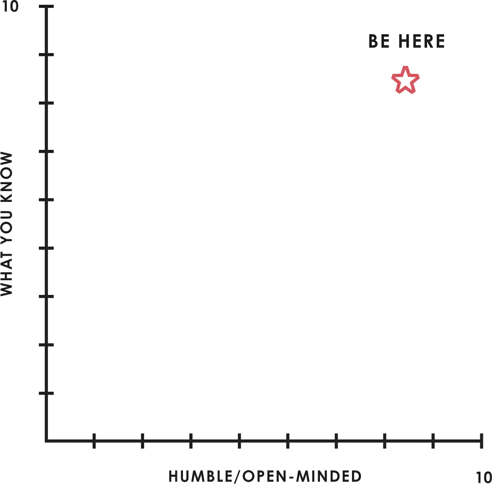

LIFE PRINCIPLES
1. Embrace Reality and Deal with It
I have found it helpful to think of my life as if it were a game in which each problem I face is a puzzle I need to solve. By solving the puzzle, I get a gem in the form of a principle that helps me avoid the same sort of problem in the future. Collecting these gems continually improves my decision making, so I am able to ascend to higher and higher levels of play in which the game gets harder and the stakes become ever greater.
All sorts of emotions come to me while I am playing and those emotions can either help me or hurt me. If I can reconcile my emotions with my logic and only act when they are aligned, I make better decisions.
Just as long-distance runners push through pain to experience the pleasure of “runner’s high,” I have largely gotten past the pain of my mistake making and instead enjoy the pleasure that comes with learning from it. I believe that with practice you can change your habits and experience the same “mistake learner’s high.”
Dreams + Reality + Determination = A Successful Life
get the most out of each hour of time and each unit of effort
Be radically open-minded and radically transparent.Learning is the product of a continuous real-time feedback loop in which we make decisions, see their outcomes, and improve our understanding of reality as a result. Being radically open-minded enhances the efficiency of those feedback loops…
Don’t let fears of what others think of you stand in your way. You must be willing to do things in the unique ways you think are best—and to open-mindedly reflect on the feedback that comes inevitably as a result of being that way.
Learning to be radically transparent is like learning to speak in public: While it’s initially awkward, the more you do it, the more comfortable you will be with it.
Imagine how many fewer misunderstandings we would have and how much more efficient the world would be—and how much closer we all would be to knowing what’s true—if instead of hiding what they think, people shared it openly. I’m not talking about everyone’s very personal inner secrets; I’m talking about people’s opinions of each other and of how the world works. As you’ll see, I’ve learned firsthand how powerful this kind of radical truth and transparency is in improving my decision making and my relationships. So whenever I’m faced with the choice, my instinct is to be transparent. I practice it as a disciplineand I recommend you do the same.
Embracing radical truth and radical transparency will bring more meaningful work and more meaningful relationships.This takes practice and changing one’s habits. I have found that it typically takes about eighteen months, which is how long it takes to change most habits.
…perfection doesn’t exist; it is a goal that fuels a never-ending process of adaptation. If nature, or anything, were perfect it wouldn’t be evolving. Organisms, organizations, and individual people are always highly imperfect but capable of improving. So rather than getting stuck hiding our mistakes and pretending we’re perfect, it makes sense to find our imperfections and deal with them.
The key is to fail, learn, and improve quickly. If you’re constantly learning and improving, your evolutionary process will look like the one that’s ascending.
Evolving is life’s greatest accomplishment and its greatest reward.
One of the great marvels of nature is how the whole system, which is full of individual organisms acting in their own self-interest and without understanding or guiding what’s going on, can create a beautifully operating and evolving whole.
Reality is optimizing for the whole—not for you. Contribute to the whole and you will likely be rewarded.
Realize that you are simultaneously everything and nothing—and decide what you want to be. It is a great paradox that individually we are simultaneously everything and nothing. Through our own eyes, we are everything—e.g., when we die, the whole world disappears. So to most people (and to other species) dying is the worst thing possible, and it is of paramount importance that we have the best life possible. However, when we look down on ourselves through the eyes of nature we are of absolutely no significance. It is a reality that each one of us is only one of about seven billion of our species alive today and that our species is only one of about ten million species on our planet. Earth is just one of about 100 billion planets in our galaxy, which is just one of about two trillion galaxies in the universe. And our lifetimes are only about 1/3,000 of humanity’s existence, which itself is only 1/20,000 of the Earth’s existence. In other words, we are unbelievably tiny and short-lived and no matter what we accomplish, our impact will be insignificant. At the same time, we instinctually want to matter and to evolve, and we can matter a tiny bit—and it’s all those tiny bits that add up to drive the evolution of the universe.
The question is how we matter and evolve. Do we matter to others (who also don’t matter in the grand scope of things) or in some greater sense that we will never actually achieve? Or does it not matter if we matter so we should forget about the question and just enjoy our lives while they last?
What you will be will depend on the perspective you have. Where you go in life will depend on how you see things and who and what you feel connected to (your family, your community, your country, mankind, the whole ecosystem, everything).You will have to decide to what extent you will put the interests of others above your own, and which others you will choose to do so for.That’s because you will regularly encounter situations that will force you to make such choices.
This constant drive toward learning and improvement makes getting better innately enjoyable and getting better fastexhilarating. Though most people think that they are striving to get the things (toys, bigger houses, money, status, etc.) that will make them happy, for most people those things don’t supply anywhere near the long-term satisfaction that getting better at something does. Once we get the things we are striving for, we rarely remain satisfied with them. The things are just the bait. Chasing after them forces us to evolve, and it is the evolution and not the rewards themselves that matters to us and to those around us.
seeking something new or seeking new depths in something old
As Freud put it, “Love and work are the cornerstones of our humanness.”
The work doesn’t necessarily have to be a job, though I believe it’s generally better if it is a job. It can be any kind oflong-term challenge that leads to personal improvement. As you might have guessed, I believe thatthe need to have meaningful work is connected to man’s innate desire to improve.
It is a fundamental law of nature that in order to gain strength one has to push one’s limits, which is painful. As Carl Jung put it, “Man needs difficulties. They are necessary for health.” Yet most people instinctually avoid pain. This is true whether we are talking about building the body (e.g., weight lifting) or the mind (e.g., frustration, mental struggle, embarrassment, shame)—and especially true when people confront the harsh reality of their own imperfections.
Pain + Reflection = Progress
…you are lucky to feel that kind of pain if you approach it correctly, becauseit is a signal that you need to find solutions so you can progress. If you can develop a reflexive reaction to psychic pain that causes you to reflect on it rather than avoid it, it will lead to your rapid learning/evolving.
The challenges you face will test and strengthen you.If you’re not failing, you’re not pushing your limits, and if you’re not pushing your limits, you’re not maximizing your potential. Though this process of pushing your limits, of sometimes failing and sometimes breaking through—and deriving benefits from both your failures and your successes—is not for everyone, if it is for you, it can be so thrilling that it becomes addictive. Life will inevitably bring you such moments, and it’ll be up to you to decide whether you want to go back for more.
Go to the pain rather than avoid it.
Every time you confront something painful, you are at a potentially important juncture in your life—you have the opportunity to choose healthy and painful truth or unhealthy but comfortable delusion. The irony is that if you choose the healthy route, the pain will soon turn into pleasure. The pain is the signal! Like switching from not exercising to exercising, developing the habit of embracing the pain and learning from it will “get you to the other side.”
By “getting to the other side,” I mean that you will become hooked on:
- • Identifying, accepting, and learning how to deal with your weaknesses,
- • Preferring that the people around you be honest with you rather than keep their negative thoughts about you to themselves, and
- • Being yourself rather than having to pretend to be strong where you are weak.
Embrace tough love.
I urge you to not be embarrassed about your problems, recognizing that everyone has them. Bringing them to the surface will help you break your bad habits and develop good ones, and you will acquire real strengths and justifiable optimism.
there are many paths to happiness.
Weigh second- and third-order consequences.
By recognizing the higher-level consequences nature optimizes for, I’ve come to see that people who overweigh the first-order consequences of their decisions and ignore the effects of second- and subsequent-order consequences rarely reach their goals. This is because first-order consequences often have opposite desirabilities from second-order consequences, resulting in big mistakes in decision making. For example, the first-order consequences of exercise (pain and time spent) are commonly considered undesirable, while the second-order consequences (better health and more attractive appearance) are desirable. Similarly, food that tastes good is often bad for you and vice versa.
Quite often the first-order consequences are the temptations that cost us what we really want, and sometimes they are the barriers that stand in our way. It’s almost as though nature sorts us by throwing us trick choices that have both types of consequences and penalizing those who make their decisions on the basis of the first-order consequences alone.
Look at the machine from the higher level.
Distinguish between you as the designer of your machine and you as a worker with(in) your machine. One of the hardest things for people to do is to objectively look down on themselves within their circumstances (i.e., their machine) so that they can act as the machine’s designer and manager. Most people remain stuck in the perspective of being a worker within the machine. If you can recognize the differences between those roles and that it is much more important that you are a good designer/manager of your life than a good worker in it, you will be on the right path. To be successful, the “designer/manager you” has to be objective about what the “worker you” is really like, not believing in him more than he deserves, or putting him in jobs he shouldn’t be in. Instead of having this strategic perspective, most people operate emotionally and in the moment; their lives are a series of undirected emotional experiences, going from one thing to the next. If you want to look back on your life and feel you’ve achieved what you wanted to, you can’t operate that way.
Successful people are those who can go above themselves to see things objectively and manage those things to shape change. They can take in the perspectives of others instead of being trapped in their own heads with their own biases. They are able to look objectively at what they are like—their strengths and weaknesses—and what others are like to put the right people in the right roles to achieve their goals. Once you understand how to do this you’ll see that there’s virtually nothing you can’t accomplish. You will just have to learn how to face your realities and use the full range of resources at your disposal. For example, if you as the designer/manager discover that you as the worker can’t do something well, you need to fire yourself as the worker and get a good replacement, while staying in the role of designer/manager of your own life. You shouldn’t be upset if you find out that you’re bad at something—you should be happy that you found out, because knowing that and dealing with it will improve your chances of getting what you want.
If you are disappointed because you can’t be the best person to do everything yourself, you are terribly naive. Nobody can do everything well. Would you want to have Einstein on your basketball team? When he fails to dribble and shoot well, would you think badly of him? Should he feel humiliated?
Most of life’s greatest opportunities come out of moments of struggle; it’s up to you to make the most of these tests of creativity and character.
When encountering your weaknesses you have four choices:
- 1. You can deny them (which is what most people do).
- 2. You can accept them and work at them in order to try to convert them into strengths (which might or might not work depending on your ability to change).
- 3. You can accept your weaknesses and find ways around them.
- 4. Or, you can change what you are going after.
Which solution you choose will be critically important to the direction of your life. The worst path you can take is the first. Denial can only lead to your constantly banging up against your weaknesses, having pain, and not getting anywhere. The second—accepting your weaknesses while trying to turn them into strengths—is probably the best path if it works.But some things you will never be good at and it takes a lot of time and effort to change. The best single clue as to whether you should go down this path iswhether the thing you are trying to do is consistent with your nature (i.e., your natural abilities).The third path—accepting your weaknesses while trying to find ways around them—is the easiest and typically the most viable path, yet it is the one least followed. The fourth path, changing what you are going after, is also a great path, though it requires flexibility on your part to get past your preconceptions and enjoy the good fit when you find it.
Asking others who are strong in areas where you are weak to help you is a great skill that you should develop no matter what, as it will help you develop guardrails that will prevent you from doing what you shouldn’t be doing. All successful people are good at this.
If you are open-minded enough and determined, you can get virtually anything you want. So I certainly don’t want to dissuade you from going after whatever you want. At the same time, I urge you to reflect on whether what you are going after is consistent with your nature. Whatever your nature is, there are many paths that will suit you, so don’t fixate on just one. Should a particular path close, all you have to do is find another good one consistent with what you’re like.
- 1. Don’t confuse what you wish were true with what is really true.
- 2. Don’t worry about looking good—worry instead about achieving your goals.
- 3. Don’t overweight first-order consequences relative to second- and third-order ones.
- 4. Don’t let pain stand in the way of progress.
- 5. Don’t blame bad outcomes on anyone but yourself.
BAD
Don’t hold yourself and others accountable.
GOOD
Hold yourself and others accountable.
2. Use the 5-Step Process to Get What You Want Out of Life
- 1. Have clear goals.
- 2. Identify and don’t tolerate the problems that stand in the way of your achieving those goals.
- 3. Accurately diagnose the problems to get at their root causes.
- 4. Design plans that will get you around them.
- 5. Do what’s necessary to push these designs through to results.
To help you stay centered and effective, pretend that your life is a martial art or a game, the object of which is to get around a challenge and reach a goal. Once you accept its rules, you’ll get used to the discomfort that comes with the constant frustration. You will never handle everything perfectly: Mistakes are inevitable and it’s important to recognize and accept this fact of life.
With practice, you will eventually play this game with a calm unstoppable centeredness in the face of adversity.Your ability to get what you want will thrill you.
Have clear goals.
Prioritize:
Life is like a giant smorgasbord with more delicious alternatives than you can ever hope to taste. Choosing a goal often means rejecting some things you want in order to get other things that you want or need even more. Some people fail at this point, before they’ve even started. Afraid to reject a good alternative for a better one, they try to pursue too many goals at once, achieving few or none of them. Don’t get discouraged and don’t let yourself be paralyzed by all the choices. You can have much more than what you need to be happy. Make your choice and get on with it.
Don’t confuse goals with desires. A proper goal is something that you really need to achieve. Desires are things that you want that can prevent you from reaching your goals. Typically, desires are first-order consequences. For example, your goal might be physical fitness, while your desire is to eat good-tasting but unhealthy food.
Decide what you really want in life by reconciling your goals and your desires. Take passion, for example. Without passion, life would be dull; you wouldn’t want to live without it. But what’s key is what you do with your passion. Do you let it consume you and drive you to irrational acts, or do you harness it to motivate and drive you while you pursue your real goals? What will ultimately fulfill you are things that feel right at both levels, as both desires and goals.
Never rule out a goal because you think it’s unattainable. Be audacious. There is always a best possible path. Your job is to find it and have the courage to follow it. What you think is attainable is just a function of what you know at the moment. Once you start your pursuit you will learn a lot, especially if you triangulate with others; paths you never saw before will emerge.
…self-accountability is essential because if you really believe that failing to achieve a goal is your personal failure, you will see your failing to achieve it as indicative that you haven’t been creative or flexible or determined enough to do what it takes. And you will be that much more motivated to find the way.
Your mission is to always make the best possible choices, knowing that you will be rewarded if you do.
Identify and don’t tolerate problems.
Be specific in identifying your problems. You need to be precise, because different problems have different solutions. If a problem is due to inadequate skill, additional training may be called for; if it arises from an innate weakness, you may need to seek assistance from someone else or change the role you play. In other words, if you’re bad at accounting, hire an accountant. If a problem stems from someone else’s weaknesses, replace them with someone who is strong where it’s needed. That’s just the way it is.
Distinguish big problems from small ones. You only have so much time and energy; make sure you are investing them in exploring the problems that, if fixed, will yield you the biggest returns. But at the same time, make sure you spend enough time with the small problems to make sure they’re not symptoms of larger ones.
Once you identify a problem, don’t tolerate it.
Whether you tolerate it because you believe it cannot be solved, because you don’t care enough to solve it, or because you can’t muster enough of whatever it takes to solve it, if you don’t have the will to succeed, then your situation is hopeless. You need to develop a fierce intolerance of badness of any kind, regardless of its severity.
Diagnose problems to get at their root causes.
Like principles, root causes manifest themselves over and over again in seemingly different situations.
Recognize that knowing what someone (including you) is like will tell you what you can expect from them. You will have to get over your reluctance to assess what people are like if you want to surround yourself with people who have the qualities you need. That goes for yourself too.
More than anything else, what differentiates people who live up to their potential from those who don’t is their willingness to look at themselves and others objectively and understand the root causes standing in their way.
Design a plan.
Go back before you go forward. Replay the story of where you have been (or what you have done) that led up to where you are now, and then visualize what you and others must do in the future so you will reach your goals.
Think about your problem as a set of outcomes produced by a machine. Practice higher-level thinking by looking down on your machine and thinking about how it can be changed to produce better outcomes.
Remember that there are typically many paths to achieving your goals. You only need to find one that works.
Think of your plan as being like a movie script in that you visualize who will do what through time.
Push through to completion.
There are many successful, creative people who aren’t good at execution. They succeed because they forge symbiotic relationships with highly reliable task-doers.
Remember that weaknesses don’t matter if you find solutions.
…goal setting (such as determining what you want your life to be) requires you to be good at higher-level thinking like visualization and prioritization. Identifying and not tolerating problems requires you to be perceptive and good at synthesis and maintaining high standards; diagnosis requires you to be logical, able to see multiple possibilities, and willing to have hard conversations with others; designing requires visualization and practicality; doing what you set out to do requires self-discipline, good work habits, and a results orientation.
Everyone has at least one big thing that stands in the way of their success; find yours and deal with it. Write down what your one big thing is (such as identifying problems, designing solutions, pushing through to results) and why it exists (your emotions trip you up, you can’t visualize adequate possibilities).
[pushing through - lack of self-discipline, emotional cause - I lose interest very easily and then jump towards the next shiny thing that grabs my attention and fills me with excitement]
There are two paths to success: 1) to have what you need yourself or 2) to get it from others. The second path requires you to have humility. Humility is as important, or even more important, as having the strengths yourself. Having both is best.

3. Be Radically Open-Minded
Understand your ego barrier.
Let’s look at what tends to happen when someone disagrees with you and asks you to explain your thinking. Because you are programmed to view such challenges as attacks, you get angry, even though it would be more logical for you to be interested in the other person’s perspective, especially if they are intelligent. When you try to explain your behavior, your explanations don’t make any sense. That’s because your lower-level you is trying to speak through your upper-level you. Your deep-seated, hidden motivations are in control, so it is impossible for you to logically explain what “you” are doing.
If you are too proud of what you know or of how good you are at something you will learn less, make inferior decisions, and fall short of your potential.
Understand your blind spot barrier.
Just as we all have different ranges for hearing pitch and seeing colors, we have different ranges for seeing and understanding things. We each see things in our own way. For example, some people naturally see big pictures and miss small details while others naturally see details and miss big pictures; some people are linear thinkers while others think laterally, and so on.
Naturally, people can’t appreciate what they can’t see. A person who can’t identify patterns and synthesize doesn’t know what it’s like to see patterns and synthesize any more than a color-blind person knows what it’s like to see color.
When trying to figure things out, most people spin in their own heads instead of taking in all the wonderful thinking available to them. As a result, they continually run toward what they see and keep crashing into what they are blind to until the crashing leads them to adapt. Those who adapt do so by a) teaching their brains to work in a way that doesn’t come naturally (the creative person learns to become organized through discipline and practice, for instance), b) using compensating mechanisms (such as programmed reminders), and/or c) relying on the help of others who are strong where they are weak.
Differences in thinking can be symbiotic and complementary instead of disruptive. For example, the lateral approach to thinking common among creative people can lead them to be unreliable, while more linear thinkers are often more dependable; some people are more emotional while others are more logical, and so on. None of these individuals would be able to succeed at any kind of complex project without the help of others who have complementary strengths.
Practice radical open-mindedness.
Radical open-mindedness is motivated by the genuine worry that you might not be seeing your choices optimally. It is the ability to effectively explore different points of view and different possibilities without letting your ego or your blind spots get in your way.
Sincerely believe that you might not know the best possible path
People interested in making the best possible decisions are rarely confident that they have the best answers. They recognize that they have weaknesses and blind spots, and they always seek to learn more so that they can get around them.
To be radically open-minded, you need to be so open to the possibility that you could be wrong that you encourage others to tell you so.
Remember that you’re looking for the best answer, not simply the best answer that you can come up with yourself. The answer doesn’t have to be in your head; you can look outside yourself.
I define believable peopleas those who have repeatedly and successfully accomplished the thing in question—who have a strong track record with at least three successes—and have great explanations of their approach when probed.
Appreciate the art of thoughtful disagreement.
In thoughtful disagreement, your goal is not to convince the other party that you are right—it is to find out which view is true and decide what to do about it. In thoughtful disagreement, both parties are motivated by the genuine fear of missing important perspectives. Exchanges in which you really see what the other person is seeing and they really see what you are seeing—with both your “higher-level yous” trying to get to the truth—are immensely helpful and a giant source of untapped potential.
To do this well, approach the conversation in a way that conveys that you’re just trying to understand. Use questions rather than make statements. Conduct the discussion in a calm and dispassionate manner, and encourage the other person to do that as well. Remember, you are not arguing; you are openly exploring what’s true.
…most disagreements aren’t threats as much as opportunities for learning. People who change their minds because they learned something are the winners, whereas those who stubbornly refuse to learn are the losers.
You should be what I call open-minded and assertive at the same time—you should hold and explore conflicting possibilities in your mind while moving fluidly toward whatever is likely to be true based on what you learn.
I also recommend that both parties observe a “two-minute rule” in which neither interrupts the other, so they both have time to get all their thoughts out.
What’s important is that you prioritize what you spend time on and who you spend it with. There are lots of people who will disagree with you, and it would be unproductive to consider all their views. It doesn’t pay to be open-minded with everyone. Instead, spend your time exploring ideas with the most believable people you have access to.
…wasting time disagreeing past the point of diminishing returns. When that happens, move on to a more productive way of getting to a mutual understanding, which isn’t necessarily the same thing as agreement. For example, you might agree to disagree.
The reluctance to disagree is the “lower-level you’s” mistaken interpretation of disagreement as conflict. That’s why radical open-mindedness isn’t easy: You need to teach yourself the art of having exchanges in ways that don’t trigger such reactions in yourself or others.
Triangulate your view with believable people who are willing to disagree.
By questioning experts individually and encouraging them to have thoughtful disagreement with each other that I can listen to and ask questions about, I both raise my probability of being right and become much better educated. This is most true when the experts disagree with me or with each other. Smart people who can thoughtfully disagree are the greatest teachers, far better than a professor assigned to stand in front of a board and lecture at you.
Plan for the worst-case scenario to make it as good as possible.
Recognize the signs of closed-mindedness and open-mindedness that you should watch out for.
Open-minded people are more curious about why there is disagreement. They are not angry when someone disagrees. They understand that there is always the possibility that they might be wrong and that it’s worth the little bit of time it takes to consider the other person’s views in order to be sure they aren’t missing something or making a mistake.
Closed-minded people are more likely to make statements than ask questions.
Closed-minded people focus much more on being understood than on understanding others. When people disagree, they tend to be quicker to assume that they aren’t being understood than to consider whether they’re the ones who are not understanding the other person’s perspective.
Open-minded people know when to make statements and when to ask questions.
Closed-minded people block others from speaking. If it seems like someone isn’t leaving space for the other person in a conversation, it’s possible they are blocking. To get around blocking, enforce the “two-minute rule” I mentioned earlier.
Open-minded people are always more interested in listening than in speaking; they encourage others to voice their views.
Closed-minded people have trouble holding two thoughts simultaneously in their minds. They allow their own view to crowd out those of others.
Open-minded people can take in the thoughts of others without losing their ability to think well—they can hold two or more conflicting concepts in their mind and go back and forth between them to assess their relative merits.
Use evidence-based decision-making tools.
What if you could unplug that lower part of your brain entirely and instead connect with a decision-making computer that gives you logically derived instructions, as we do with our investment systems? Suppose this computer-based decision-making machine has a much better track record than you because it captures more logic, processes more information more quickly, and makes decisions without being emotionally hijacked. Would you use it?... I have no doubt that in the years ahead such “machine-thinking” tools will continue to develop and that smart decision makers will learn how to integrate them into their thinking. I urge you to learn about them and consider using them.
If you continue doing what you think is best when all the evidence and believable people are against you, you’re being dangerously arrogant.
4. Understand That People Are Wired Very Differently
5. Learn How to Make Decisions Effectively
Recognize that 1) the biggest threat to good decision making is harmful emotions, and 2) decision making is a two-step process (first learning and then deciding).
Listening to uninformed people is worse than having no answers at all.
Be an imperfectionist. Perfectionists spend too much time on little differences at the margins at the expense of the important things. There are typically just five to ten important factors to consider when making a decision.